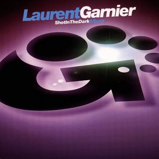

ALBUMS
Shot in the Dark (1994)

Shot in the Dark est le premier album de Laurent Garnier, sorti en 1994 sur
F Communications.
Il contient notamment les titres Astral Dreams, The Force et le classique Rex Attitude.